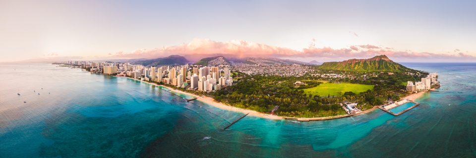
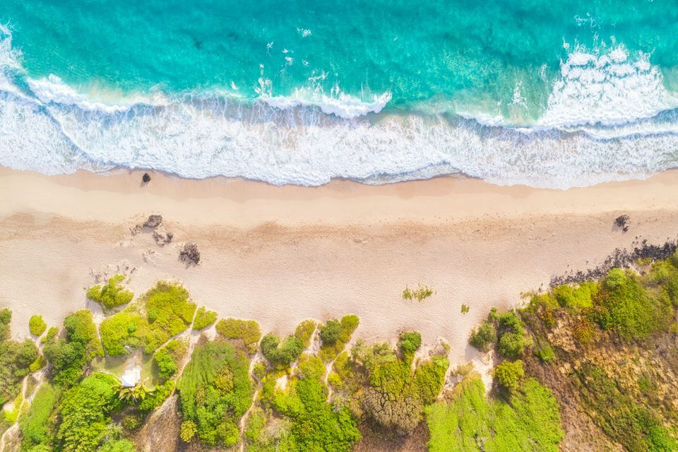
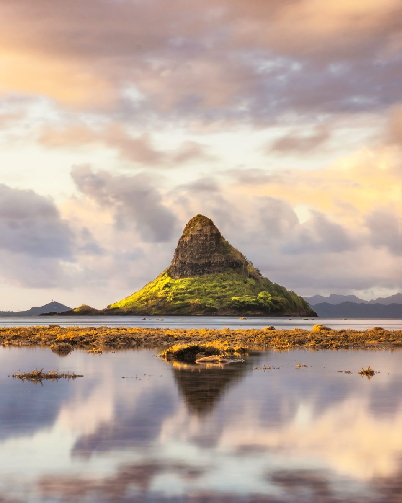
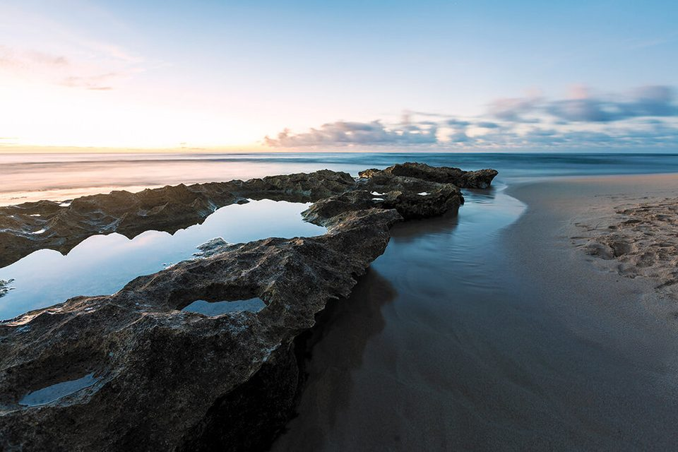
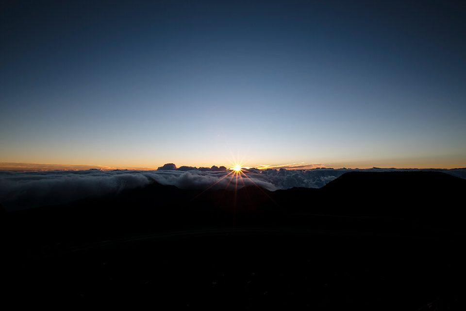
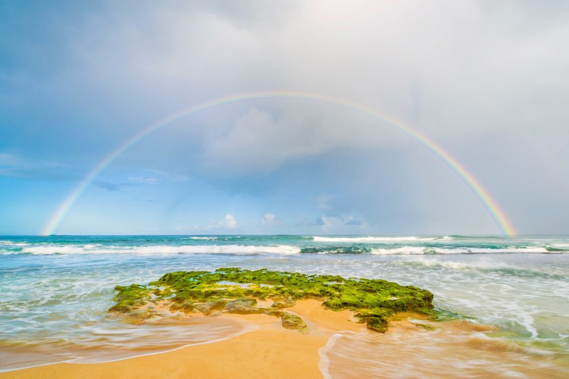

· 5 min read
The best gifts from Hawaiʻi for Christmas, and when to order them
The best gifts from Hawaiʻi are the ones they keep. A print of a real Oʻahu place, from $55, shipped to them by Christmas if you order by Nov 20.

The best gift from Hawaiʻi is one they'll still have next Christmas. A print of a real Oʻahu place does that. It brings back the beach, the drive or the view they love every time they walk past it.
Prints start at $55. Each one is made to order here on Oʻahu and ships straight to them, anywhere in the US, with no price in the box. For Christmas, order by November 20 for the mainland, December 4 for Hawaiʻi, or December 10 to pick it up free on Oʻahu.
A print is a gift from Hawaiʻi that lasts
A print gives them a piece of Hawaiʻi to live with. A box of chocolate-covered mac nuts is a classic, and it's gone by New Year's. A photograph of the place they love is still on the wall years later, and it reminds them of you every time they see it.
One customer gave his dad a print for Christmas. It went up above their living room couch, and years later it's still there.
It's truly from here, too. Every print starts as one of Kawika's own photographs of the islands and is made to order on Oʻahu. Nani Waikīkī, his most popular print, is Waikīkī washed in pink at the end of a long day, stitched together from nearly 25 frames.
His prints are part of the island already. Aloha Crepes, Lion Coffee, Olena Cafe and the Kualoa Ranch gift shop have all carried them.
Pick a place they'd know by heart
The right print is a place they'd recognize in a second. Think about who it's for, and the place usually follows.
For someone who moved away. Give them the place they miss most. It might be home, or it might be the view they never got tired of. One customer grew up on the North Shore, moved to Reno for a job, and chose Kaʻaʻawa Valley, because to him it's the most scenic part of the island. Gifts for Hawaiʻi lovers sorts the prints by where home is, from town to the North Shore, so you can find theirs in a minute.
For someone who visited. Take them back to their favorite day. Nani Waikīkī brings back the view from the hotel, Mokoliʻi Reflection is the little island off Kualoa on a still morning, and Makapuʻu Beach is the teal water they swam in, seen from above.


For someone who's never been. Show them why you love it. Kaʻaʻawa Valley is the valley from the movies, end to end, and Ānuenue is a full rainbow over the North Shore.
For family here at home. Give them the beach they go to every weekend. Mālie is water spilling over a reef at Papailoa Beach on the North Shore, and it's one of Kawika's favorites. For family from Maui, Homecoming is the first light of sunrise from the top of Haleakalā, and the name says the rest.


Browse every print by place on the Diamond Head and Waikīkī, Kaʻaʻawa Valley and Kualoa and North Shore pages.
What a print gift costs
You can give a print for $55, or go big for the one person who matters most.
| Price | What you get |
|---|---|
| $55 | A matted print, 8 x 10 or 8 x 12 in a white mat, that fits a standard 11 x 14 frame. It's the easiest one to mail. |
| $210 to $450 | A canvas or metal print, ready to hang, in sizes that fit most walls. |
| $450 and up | A large print or a panorama for a living room or a long wall. |
Shipping is added at checkout, based on the size and where it's going. A matted print costs $13 to ship to the mainland and $11 within Hawaiʻi.
You don't need to know their wall to get the size right. The matted print fits a standard 11 x 14 frame from any store, and for canvas or metal the middle size fits most walls. Metal is bright and modern, and it's Kawika's favorite. Canvas is softer and warmer.
When to order for Christmas
To have it there for Christmas, order by these dates.
| Where it's going | Order by |
|---|---|
| The mainland | Friday, November 20 |
| Hawaiʻi | Friday, December 4 |
| Pickup on Oʻahu | Thursday, December 10 |
Each print is made to order here, usually in about a week. It arrives 10 to 21 business days after you order on the mainland, or 7 to 14 in Hawaiʻi. Pickup on Oʻahu is free and usually ready 7 to 10 business days after you order, which makes it the easy way to hand it over yourself.
Questions people ask
Will they see what I paid? No. Nothing in the box shows a price.
Does it come ready to hang? Canvas comes with a hanger and metal with eyelets, so a nail or two does it. A matted print slides into a standard 11 x 14 frame.
Can I send prints to several people? Yes. If they're all going to one address, or you're picking them up on Oʻahu, put them in your cart and check out once. If each one goes to a different address, send Kawika the list, and he'll quote the shipping for each and take care of the rest.
I'm visiting Oʻahu. Can I take one home? Yes. Order about two weeks before you fly and pick it up free on your way out, or have it shipped home so it's waiting when you get there. One customer who grew up here moved to Seattle for college and stayed. On a trip home he ordered a print of Mokoliʻi and took it back to put up on his wall.
What's the last day to mail a Christmas gift from Hawaiʻi? For gifts you're mailing yourself, USPS says to ship from Hawaiʻi by December 16 for Ground Advantage, December 18 for Priority Mail and December 19 for Priority Mail Express (USPS 2026 holiday shipping dates). A print is made to order first, which is why its order-by dates come earlier.
What if it arrives damaged? Send a photo within 7 days and it's replaced free.
Can they exchange it for a different print? Prints are made to order, so sales are final, and you can cancel within 24 hours. A place they know, at the middle size, is the surest way to get it right.
Start with the place they'd recognize
Think of the person you're shopping for and the part of the islands they'd know by heart. Find their side of the island, or see all eight gift picks, each one shown to scale on a wall.
Prints in this post
All prints